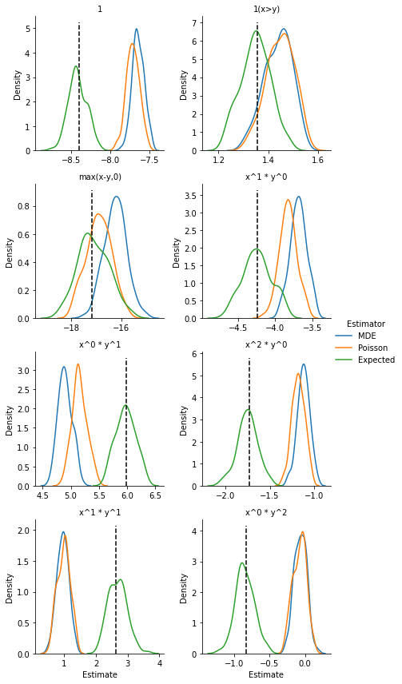

do_simuls = False
plot_simuls = False
# model_name = "choo_siow_firstsub"
model_name = "choo_siow_cupid"
# model_name = "choo_siow_firstsub10"
n_households_cupid_pop = 13_274_041 # number of households in the Cupid population
n_households_cupid_obs = 75_265 # number of households in the Cupid sample
n_households_sim = n_households_cupid_obs # number of households in the simulation
n_sim = 100 # number of simulations
value_coeff = 1.0 # we set the zeros at the smallest positive value divided by value_coeffmatching_separable_simuls
Simulations for Galichon-Salanie paper on estimating separable matching models
Install
pip install matching_separable_simulssummary
The package reads the marriage patterns from the Choo and Siow 2006 Journal of Political Economy paper for the non-reform states of the 1970 wave. It fits a parsimonious homoskedastic logit model. Then it generates n_sim datasets from the fitted model, and it uses them to test the estimation methods presented in Galichon-Salanié 2022.
setting the options
using the Cupid/Choo and Siow data
First, we read the Choo and Siow 1970 non-reform data used in Cupid.
reading and prepping the data
The data has 25 types of men and 25 types of women.We rescale the matching and we reshape and rescale the covariance matrix.
if model_name == "choo_siow_cupid":
mus = Matching(muxy, nx, my)
mus_norm = rescale_mus(mus, n_households_cupid_obs)
varmus_norm = reshape_varcov(varmus, mus, n_households_cupid_obs)if model_name == "choo_siow_cupid":
mus = Matching(muxy, nx, my)
mus_norm = rescale_mus(mus, n_households_cupid_obs)
varmus_norm = reshape_varcov(varmus, mus, n_households_cupid_obs)Finally, we add a small number to zero cells to make them non-empty:
if model_name == "choo_siow_cupid":
mus_norm_fixed = remove_zero_cells(mus_norm, coeff=value_coeff)
muxy_norm_fixed, mux0_norm_fixed, mu0y_norm_fixed, nx_norm_fixed, my_norm_fixed = mus_norm_fixed.unpack()setting up a basic model
We need to generate some basis functions. First we quantile-transform the margins; then we generate orthogonal polynomials on [0,1]. Our first three base functions are 1, 1(x>y), and max(x-y, 0) (rescaled). Then we specify monomials \(x^a y^b\) in the degrees list.
if model_name == "choo_siow_cupid":
degrees = [(1,0), (0,1), (2,0), (1,1), (0,2)]
base_functions, base_names = generate_bases(nx_norm_fixed, my_norm_fixed, degrees)
n_bases = base_functions.shape[-1]
print(f"We created {n_bases} bases:")
print(f"{base_names}")We created 8 bases:
['1', '1(x>y)', 'max(x-y,0)', 'x^1 * y^0', 'x^0 * y^1', 'x^2 * y^0', 'x^1 * y^1', 'x^0 * y^2']we save the data and the bases we generated
if model_name == "choo_siow_cupid":
with open(data_dir / f"{model_name}_mus_norm_fixed_{int(value_coeff)}.pkl", "wb") as f:
pickle.dump(mus_norm_fixed, f)
with open(data_dir / f"{model_name}_varmus_norm.pkl", "wb") as f:
pickle.dump(varmus_norm, f)
with open(data_dir / f"{model_name}_base_functions.pkl", "wb") as f:
pickle.dump(base_functions, f)testing the estimation
if model_name == "choo_siow_cupid":
mde_results = estimate_semilinear_mde(
mus_norm_fixed, base_functions, entropy_choo_siow,
more_params=None
)
estim_Phi = mde_results.estimated_Phi
estim_coeffs = mde_results.estimated_coefficients
varcov_coeffs = mde_results.varcov_coefficients
std_coeffs = mde_results.stderrs_coefficients
print(mde_results)
with open(data_dir / f"{model_name}_mde_results.pkl", "wb") as f:
pickle.dump(mde_results, f)********************************************************************************
The data has 75264.82360878828 households
The model has 25x25 margins
The entropy is parameter-free.
We use 8 basis functions.
The estimated coefficients (and their standard errors) are
base 1: -8.405 ( 0.114)
base 2: 1.355 ( 0.064)
base 3: -17.184 ( 0.576)
base 4: -4.236 ( 0.187)
base 5: 5.981 ( 0.166)
base 6: -1.731 ( 0.112)
base 7: 2.620 ( 0.305)
base 8: -0.836 ( 0.139)
Specification test:
the value of the test statistic is 2171.279
for a chi2(617), the p-value is 0.000
********************************************************************************
generating artificial datasets and fitting a homoskedastic logit model
if model_name == "choo_siow_cupid": # we use the Phi and the margins we got from the Cupid dataset
choo_siow_estim = ChooSiowPrimitives(estim_Phi, nx_norm_fixed, my_norm_fixed)
elif model_name.startswith("choo_siow_firstsub"): # we regenerate the simulation in the first submitted version
n_types_men = n_types_women = 20
theta1 = np.array([1.0, 0.0, 0.0, -0.01, 0.02, -0.01, 0.5, 0.0])
if model_name == "choo_siow_firstsub10":
theta1 *= 10
n_bases = theta1.size
base_functions = np.zeros((n_types_men, n_types_women, n_bases))
base_functions[:, :, 0] = 1.0
vec_x = np.arange(n_types_men)
vec_y = np.arange(n_types_women)
base_functions[:, :, 1] = nprepeat_col(vec_x, n_types_women)
base_functions[:, :, 2] = nprepeat_row(vec_y, n_types_men)
base_functions[:, :, 3] = base_functions[:, :, 1] * base_functions[:, :, 1]
base_functions[:, :, 4] = base_functions[:, :, 1] * base_functions[:, :, 2]
base_functions[:, :, 5] = base_functions[:, :, 2] * base_functions[:, :, 2]
for i in range(n_types_men):
for j in range(i, n_types_women):
base_functions[i, j, 6] = 1
base_functions[i, j, 7] = i - j
base_names = ["1", "x", "y", "x^2", "xy", "y^2", "1(x>y)", "max(x-y,0)"]
Phi1 = base_functions @ theta1
t = 0.2
nx1 = np.logspace(start=0, base=1 - t, stop=n_types_men - 1, num=n_types_men)
my1 = np.logspace(start=0, base=1 - t, stop=n_types_women - 1, num=n_types_women)
choo_siow_estim = ChooSiowPrimitives(Phi1, nx1, my1)
estim_coeffs = theta1
def _run_simul(
i_sim: int, # the index of the simulation
seed: int, # the seed for its random draws
n_households_sim: float, # the number of households in the simulation
base_functions: np.ndarray, # the bases
entropy: EntropyFunctions, # the entropy
value_coeff: float # the divider
) -> Tuple[MDEResults, PoissonGLMResults]:
""" runs one simulation for both estmators"""
mus_sim = choo_siow_estim.simulate(n_households_sim, seed=seed)
mus_sim_non0 = remove_zero_cells(mus_sim, coeff=value_coeff)
mde_results_sim = estimate_semilinear_mde(
mus_sim_non0, base_functions, entropy, more_params=None)
estim_coeffs_mde = mde_results_sim.estimated_coefficients
poisson_results_sim = choo_siow_poisson_glm(mus_sim_non0, base_functions, verbose = 0)
estim_coeffs_poisson = poisson_results_sim.estimated_beta
if i_sim % 10 == 0:
print(f"Done simul {i_sim}")
return estim_coeffs_mde, estim_coeffs_poissonif do_simuls:
# generate random seeds
rng = np.random.default_rng(130962)
seeds = rng.integers(100_000, size=n_sim)
estim_coeffs_mde = np.zeros((n_sim, n_bases))
estim_coeffs_poisson = np.zeros((n_sim, n_bases))
list_args = [
[
i_sim, seeds[i_sim], n_households_sim,
base_functions, entropy_choo_siow, value_coeff
] for i_sim in range(n_sim)
]
nb_cpus = 8
with Pool(nb_cpus) as pool:
results = pool.starmap(_run_simul, list_args)
for i_sim in range(n_sim):
estim_coeffs_mde[i_sim, :] = results[i_sim][0]
estim_coeffs_poisson[i_sim, :] = results[i_sim][1]
simul_results = {'Base names': base_names, 'Base functions': base_functions,
'True coeffs': estim_coeffs,
'MDE': estim_coeffs_mde, 'Poisson': estim_coeffs_poisson}
if model_name == "choo_siow_cupid":
simul_results['MDE stderrs'] = std_coeffs
simul_results['MDE varcov'] = varcov_coeffs
with open(data_dir / f"{model_name}_{n_households_sim}_{int(value_coeff)}.pkl", "wb") as f:
pickle.dump(simul_results, f)Done simul 0
Done simul 20
Done simul 30
Done simul 10
Done simul 40
Done simul 60
Done simul 50
Done simul 70
Done simul 80
Done simul 90we plot the distributions of the estimates
n_households_obs = n_households_cupid_obs if model_name == "choo_siow_cupid" else None
if plot_simuls:
plot_simulation_results(model_name, n_households_sim, value_coeff, n_households_obs)We have a total of 0 outliers for MDE, out of 100 simulations.
We have a total of 0 outliers for Poisson, out of 100 simulations.
We have found no outlier samples